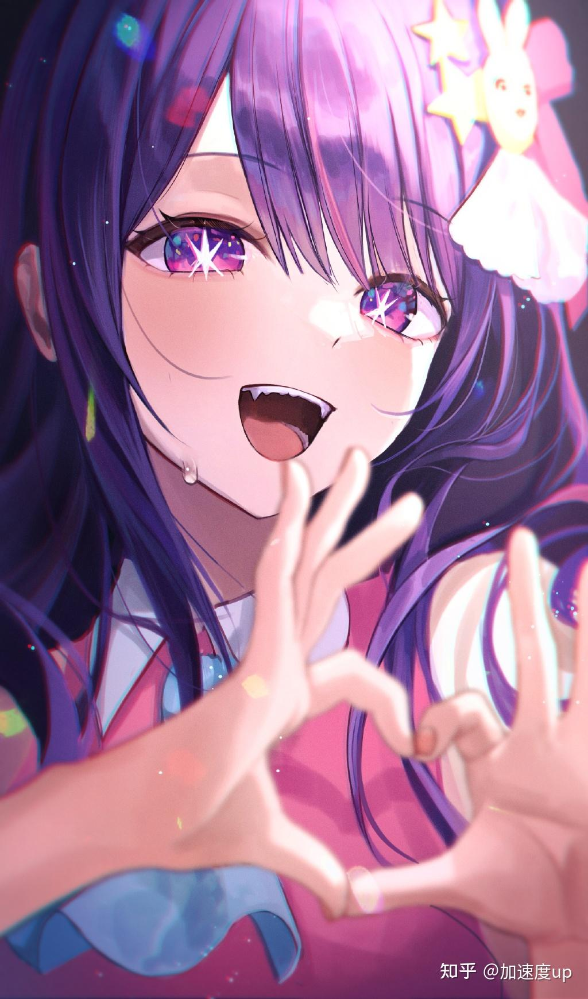

“在演艺圈（这个世界）里，谎言就是武器。”雨宫吾郎是位任职于乡镇的妇产科医生。某一天，他所推的偶像“B小町”的星野爱突然出现在他眼前。她身上还藏着一个禁忌的秘密。两人在“最糟”的情况下相遇，他们的命运也就此转动……吾郎转生为爱的龙凤胎之一的阿库亚，他生前的患者天童寺纱利奈则转生为他的妹妹露比 [5之后，天才偶像星野爱死了。留在世上的双胞胎妹妹露比憧憬着母亲而踏入了演艺圈。而哥哥阿库亚则发誓要向协助杀害爱的亲生父亲复仇。“爱的私生子”“拥有前世的记忆”。有着这样两个大秘密的兄妹，开始了新的故事 [5]。新的舞台拉开了帷幕——人气漫画《东京之刃》的舞台剧排练开始了。因为经常和剧团“Lalalai”的演员们待在一起，有马加奈有了很大的飞跃。黑川茜一边承认有马加奈的才能，一边激烈地燃烧着竞争心。和有才能和热情的演员聚在一起，阿库亚甚至利用演技继续追查爱的死亡真相。而露比则作为偶像一直追随母亲的背影。
最近他完结了。这就是那个最近争议很大的漫画，我只能说赤坂明你真棒。